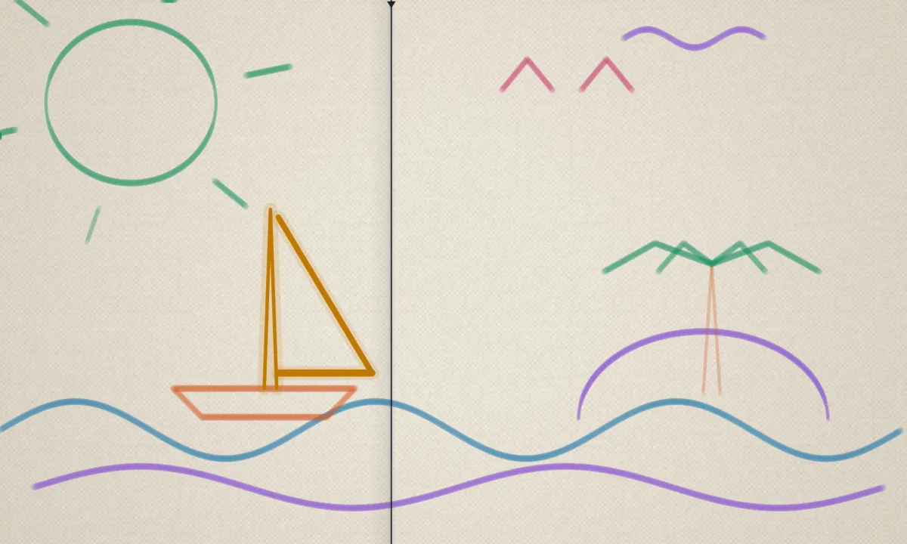
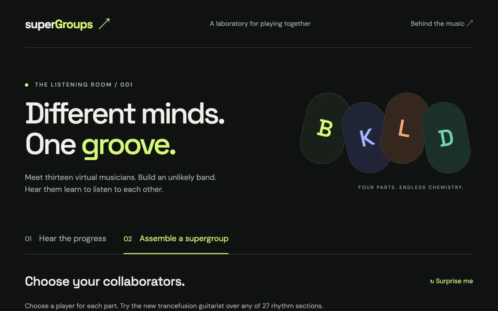
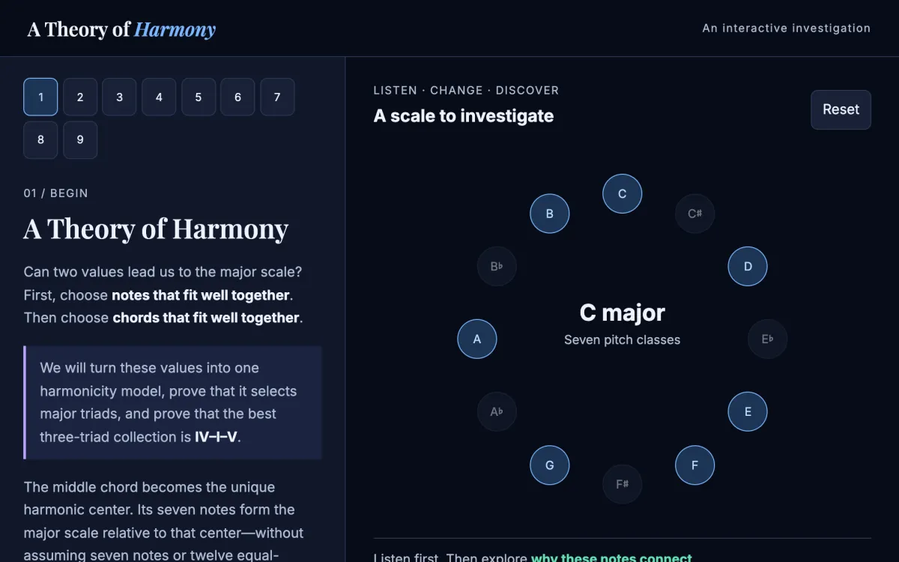
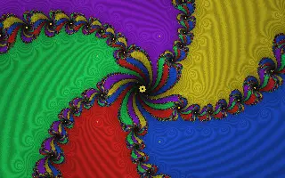
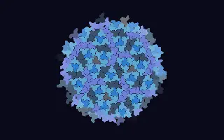
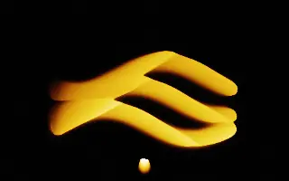
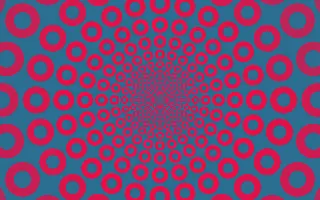
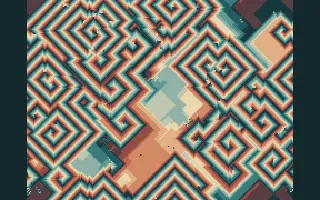
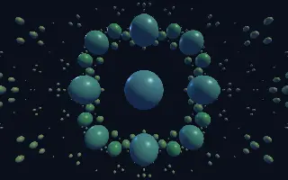

nicjams
Small instruments for ears and eyes. Paint a tune, form a band of virtual musicians, prove where the major scale comes from, or set some mathematics in motion.
Projects

Music · Instrument
musicalCanvas
Paint music. Each brush is an instrument, and a playhead sweeps the canvas turning your strokes into notes. Smear a stroke to play a chord, press Scene for a picture that plays, then export MIDI.

Music · Machine learning
superGroups
Thirteen virtual musicians, trained from scratch in PyTorch. Hear how they learned to listen to each other, then build an unlikely band and mix its takes.

Music theory · Interactive essay
A Theory of Harmony
Hear beating, pluck a string and compare tunings, then follow a proof that one harmonicity model selects major triads, IV–I–V and the major scale.






Mathematics · Visuals
Graphics Studio
Fractals, tilings, fluids and botanical studies in one gallery. Build playlists, present them full screen, and drive them from your phone as a remote.